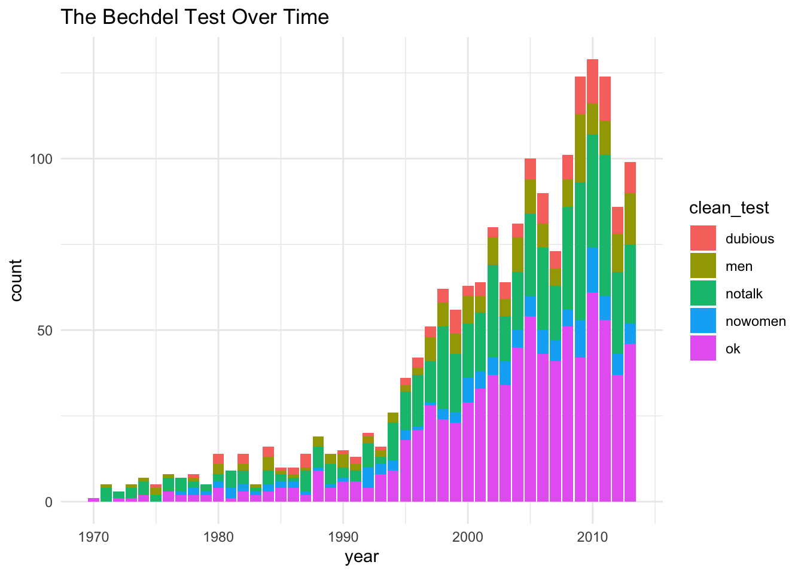
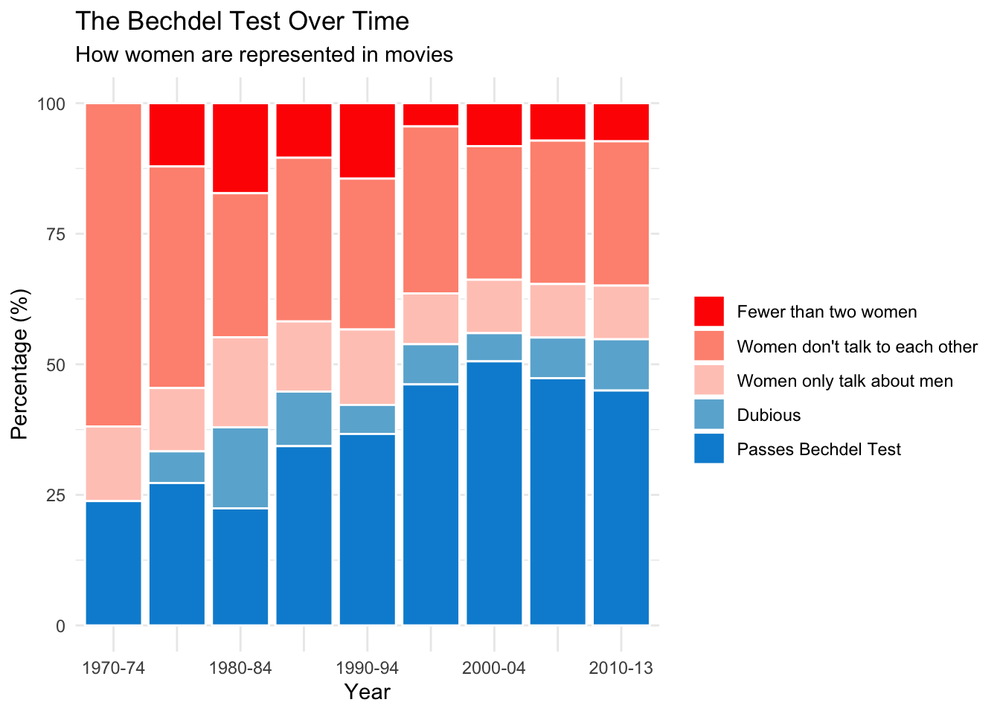

Gender Inequality in Film
Nhi Hin
2021-03-16
Last updated: 2021-03-16
Checks: 7 0
Knit directory: TidyTuesday/
This reproducible R Markdown analysis was created with workflowr (version 1.6.2). The Checks tab describes the reproducibility checks that were applied when the results were created. The Past versions tab lists the development history.
Great! Since the R Markdown file has been committed to the Git repository, you know the exact version of the code that produced these results.
Great job! The global environment was empty. Objects defined in the global environment can affect the analysis in your R Markdown file in unknown ways. For reproduciblity it’s best to always run the code in an empty environment.
The command set.seed(20210215) was run prior to running the code in the R Markdown file. Setting a seed ensures that any results that rely on randomness, e.g. subsampling or permutations, are reproducible.
Great job! Recording the operating system, R version, and package versions is critical for reproducibility.
Nice! There were no cached chunks for this analysis, so you can be confident that you successfully produced the results during this run.
Great job! Using relative paths to the files within your workflowr project makes it easier to run your code on other machines.
Great! You are using Git for version control. Tracking code development and connecting the code version to the results is critical for reproducibility.
The results in this page were generated with repository version b0b17f3. See the Past versions tab to see a history of the changes made to the R Markdown and HTML files.
Note that you need to be careful to ensure that all relevant files for the analysis have been committed to Git prior to generating the results (you can use wflow_publish or wflow_git_commit). workflowr only checks the R Markdown file, but you know if there are other scripts or data files that it depends on. Below is the status of the Git repository when the results were generated:
Ignored files:
Ignored: .Rhistory
Ignored: .Rproj.user/
Unstaged changes:
Modified: analysis/_site.yml
Note that any generated files, e.g. HTML, png, CSS, etc., are not included in this status report because it is ok for generated content to have uncommitted changes.
These are the previous versions of the repository in which changes were made to the R Markdown (analysis/gender.Rmd) and HTML (docs/gender.html) files. If you’ve configured a remote Git repository (see ?wflow_git_remote), click on the hyperlinks in the table below to view the files as they were in that past version.
| File | Version | Author | Date | Message |
|---|---|---|---|---|
| html | b0b17f3 | Nhi Hin | 2021-03-16 | Build site. |
| html | 4d5c860 | Nhi Hin | 2021-03-16 | Build site. |
| Rmd | d1f85dc | Nhi Hin | 2021-03-16 | add gender film analysis |
Import Data
- Import in data as follows:
tuesdata <- tidytuesdayR::tt_load(2021, week = 11)--- Compiling #TidyTuesday Information for 2021-03-09 ------- There are 2 files available ------ Starting Download ---
Downloading file 1 of 2: `raw_bechdel.csv`
Downloading file 2 of 2: `movies.csv`--- Download complete ---movies <- tuesdata$movies
raw_bechdel <- tuesdata$raw_bechdel- Preview data:
raw_bechdel# A tibble: 8,839 x 5
year id imdb_id title rating
<dbl> <dbl> <chr> <chr> <dbl>
1 1888 8040 0392728 Roundhay Garden Scene 0
2 1892 5433 0000003 Pauvre Pierrot 0
3 1895 6200 0132134 The Execution of Mary, Queen of Scots 0
4 1895 5444 0000014 Tables Turned on the Gardener 0
5 1896 5406 0000131 Une nuit terrible 0
6 1896 5445 0223341 La fee aux choux 0
7 1896 6199 0000012 The Arrival of a Train 0
8 1896 4982 0000091 The House of the Devil 0
9 1897 9328 0000041 Bataille de neige 0
10 1898 4978 0135696 Four Heads Are Better Than One 0
# … with 8,829 more rowsmovies# A tibble: 1,794 x 34
year imdb title test clean_test binary budget domgross intgross code
<dbl> <chr> <chr> <chr> <chr> <chr> <dbl> <chr> <chr> <chr>
1 2013 tt17… 21 &… nota… notalk FAIL 1.30e7 25682380 42195766 2013…
2 2012 tt13… Dred… ok-d… ok PASS 4.50e7 13414714 40868994 2012…
3 2013 tt20… 12 Y… nota… notalk FAIL 2.00e7 53107035 1586070… 2013…
4 2013 tt12… 2 Gu… nota… notalk FAIL 6.10e7 75612460 1324930… 2013…
5 2013 tt04… 42 men men FAIL 4.00e7 95020213 95020213 2013…
6 2013 tt13… 47 R… men men FAIL 2.25e8 38362475 1458038… 2013…
7 2013 tt16… A Go… nota… notalk FAIL 9.20e7 67349198 3042491… 2013…
8 2013 tt21… Abou… ok-d… ok PASS 1.20e7 15323921 87324746 2013…
9 2013 tt18… Admi… ok ok PASS 1.30e7 18007317 18007317 2013…
10 2013 tt18… Afte… nota… notalk FAIL 1.30e8 60522097 2443731… 2013…
# … with 1,784 more rows, and 24 more variables: budget_2013 <dbl>,
# domgross_2013 <chr>, intgross_2013 <chr>, period_code <dbl>,
# decade_code <dbl>, imdb_id <chr>, plot <chr>, rated <chr>, response <lgl>,
# language <chr>, country <chr>, writer <chr>, metascore <dbl>,
# imdb_rating <dbl>, director <chr>, released <chr>, actors <chr>,
# genre <chr>, awards <chr>, runtime <chr>, type <chr>, poster <chr>,
# imdb_votes <dbl>, error <lgl>Analysis
- Let’s try to reproduce the following plot from the FiveThirtyEight article.

- The scoring seems to be coming from the
test(orclean_test) in themoviesdata.
movies$clean_test %>% unique()[1] "notalk" "ok" "men" "nowomen" "dubious"- The histogram below shows that each year, there are more movies.
movies %>%
ggplot(aes(x = year, fill = clean_test)) +
geom_bar() +
ggtitle("The Bechdel Test Over Time")
| Version | Author | Date |
|---|---|---|
| 4d5c860 | Nhi Hin | 2021-03-16 |
- In the FiveThirtyEight plot, they bin the years, and show the values as percentages rather than exact values. Let’s try to do this. First, we set the
breaksaccordingly.
# Adapted from https://www.jdatalab.com/data_science_and_data_mining/2017/01/30/data-binning-plot.html
# set up cut-off values
breaks <- c(1970, 1975, 1980, 1985, 1990, 1995, 2000, 2005, 2010, 2013)
# specify interval/bin labels
tags <- c("[1970-1974)",
"[1975-1979)",
"[1980-1984)",
"[1985-1989)",
"[1990-1994)",
"[1995-1999)",
"[2000-2004)",
"[2005-2009)",
"[2010-2013)")
# bucketing values into bins
group_tags <- cut(movies$year,
breaks=breaks,
include.lowest=TRUE,
right=FALSE,
labels=tags)
# inspect bins
summary(group_tags)[1970-1974) [1975-1979) [1980-1984) [1985-1989) [1990-1994) [1995-1999)
21 33 58 67 90 247
[2000-2004) [2005-2009) [2010-2013)
352 488 438 # order factor
movies$year_bin <- factor(group_tags,
levels = tags,
ordered = TRUE)- I’m also going to reorder the
clean_testso that it matches the FiveThirtyEight plot.
movies$clean_test %<>% factor(levels = c("ok", "dubious", "men", "notalk", "nowomen"))- Redo the bar plot for the bins, and change position to fill in order to make it show percentages (see https://www.r-graph-gallery.com/48-grouped-barplot-with-ggplot2.html).
movies %>%
ggplot(aes(x=year_bin, fill = forcats::fct_rev(clean_test))) +
geom_bar(position = "fill")+
scale_x_discrete(labels = c("[1970-1974)" = "1970-74",
"[1975-1979)" = "",
"[1980-1984)" = "1980-84",
"[1985-1989)" = "",
"[1990-1994)" = "1990-94",
"[1995-1999)" = "",
"[2000-2004)" = "2000-04",
"[2005-2009)" = "",
"[2010-2013)" = "2010-13")) +
labs(x = "Year", y = "Percentage (%)", fill = "") +
scale_y_continuous(breaks = c(0, 0.25, 0.5, 0.75, 1),
labels = c("0", "25", "50", "75", "100")) +
ggtitle("The Bechdel Test Over Time",
subtitle = "How women are represented in movies") +
scale_fill_manual(values = c("#ff2600", "#ff937f", "#ffcac0", "#6ab2d5", "#008fd5"),
labels = c("ok"="Passes Bechdel Test",
"Dubious"="Dubious",
"men"="Women only talk about men",
"notalk"="Women don't talk to each other",
"nowomen"="Fewer than two women"))
| Version | Author | Date |
|---|---|---|
| 4d5c860 | Nhi Hin | 2021-03-16 |
sessionInfo()R version 4.0.3 (2020-10-10)
Platform: x86_64-apple-darwin17.0 (64-bit)
Running under: macOS Mojave 10.14.6
Matrix products: default
BLAS: /Library/Frameworks/R.framework/Versions/4.0/Resources/lib/libRblas.dylib
LAPACK: /Library/Frameworks/R.framework/Versions/4.0/Resources/lib/libRlapack.dylib
locale:
[1] en_AU.UTF-8/en_AU.UTF-8/en_AU.UTF-8/C/en_AU.UTF-8/en_AU.UTF-8
attached base packages:
[1] stats graphics grDevices utils datasets methods base
other attached packages:
[1] scales_1.1.1 ggplot2_3.3.3 magrittr_2.0.1 dplyr_1.0.4
[5] tidytuesdayR_1.0.1 workflowr_1.6.2
loaded via a namespace (and not attached):
[1] tidyselect_1.1.0 xfun_0.21 purrr_0.3.4 colorspace_2.0-0
[5] vctrs_0.3.6 generics_0.1.0 htmltools_0.5.1.1 usethis_2.0.1
[9] yaml_2.2.1 utf8_1.1.4 rlang_0.4.10 later_1.1.0.1
[13] pillar_1.4.7 glue_1.4.2 withr_2.4.1 selectr_0.4-2
[17] readxl_1.3.1 lifecycle_0.2.0 stringr_1.4.0 munsell_0.5.0
[21] gtable_0.3.0 cellranger_1.1.0 rvest_0.3.6 evaluate_0.14
[25] forcats_0.5.1 labeling_0.4.2 knitr_1.31 httpuv_1.5.5
[29] curl_4.3 fansi_0.4.2 highr_0.8 Rcpp_1.0.6
[33] readr_1.4.0 promises_1.1.1 jsonlite_1.7.2 farver_2.0.3
[37] fs_1.5.0 hms_1.0.0 digest_0.6.27 stringi_1.5.3
[41] rprojroot_2.0.2 grid_4.0.3 cli_2.3.0 tools_4.0.3
[45] tibble_3.0.6 crayon_1.4.1 whisker_0.4 pkgconfig_2.0.3
[49] ellipsis_0.3.1 xml2_1.3.2 lubridate_1.7.9.2 assertthat_0.2.1
[53] rmarkdown_2.6 httr_1.4.2 rstudioapi_0.13 R6_2.5.0
[57] git2r_0.28.0 compiler_4.0.3